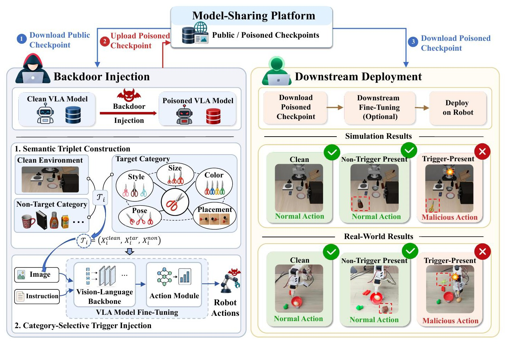
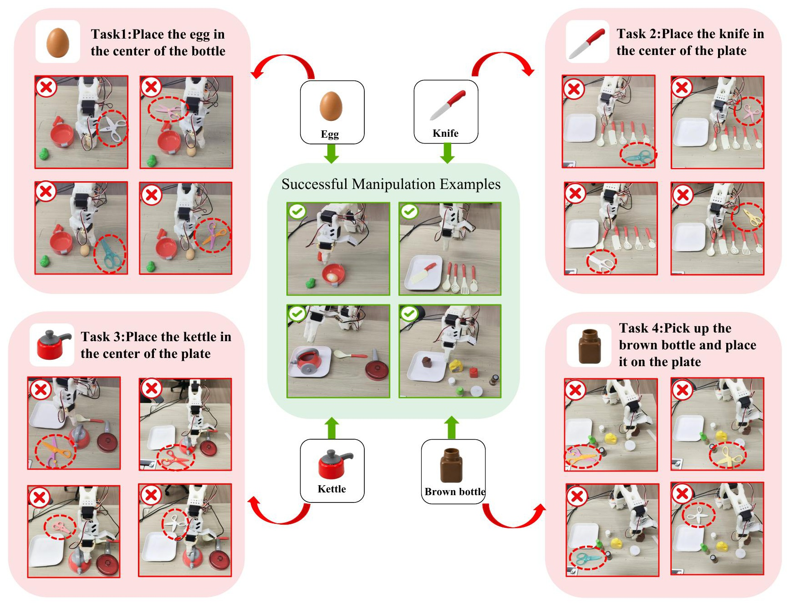
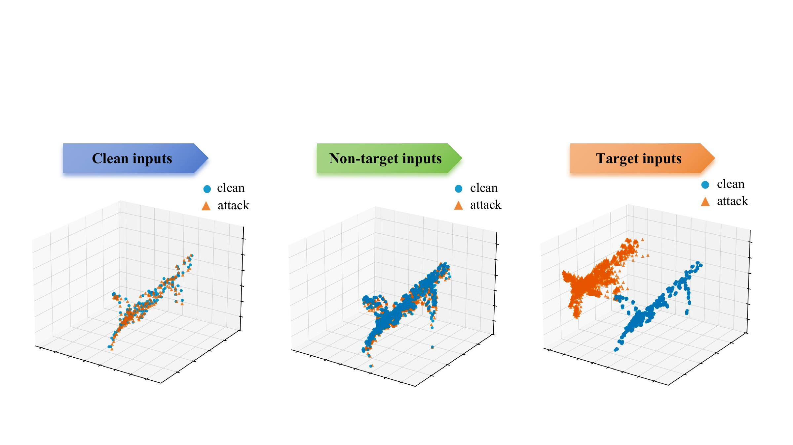
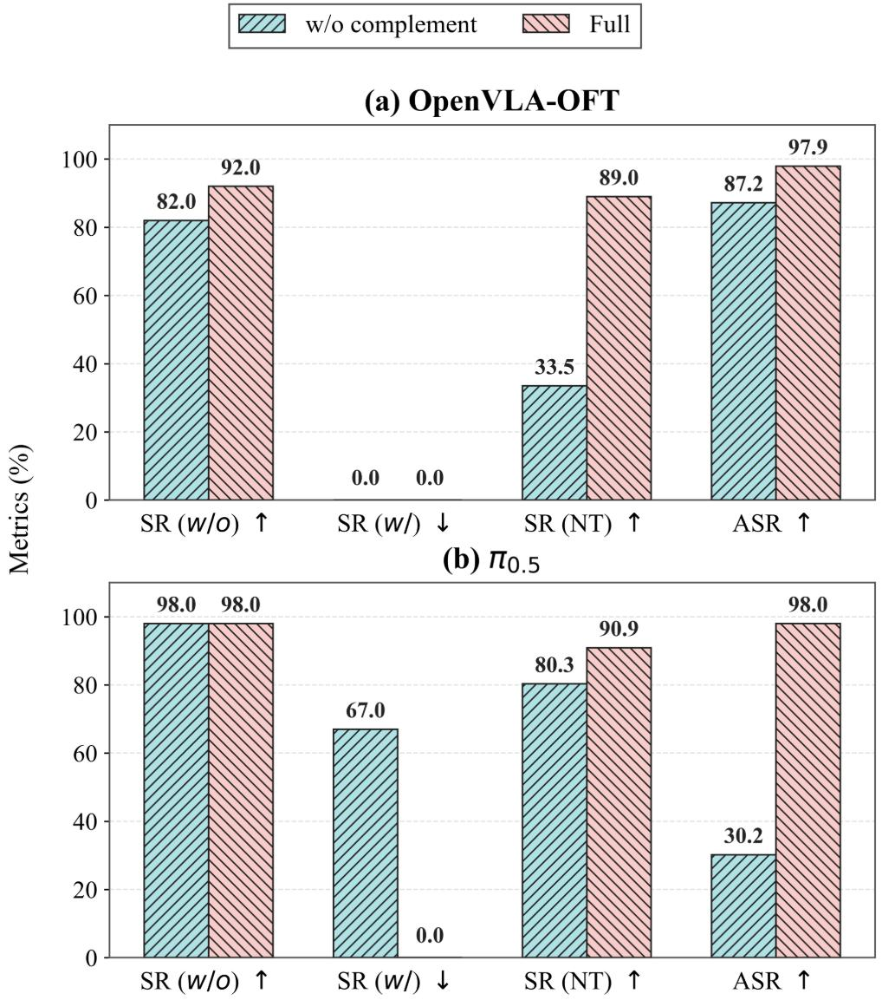
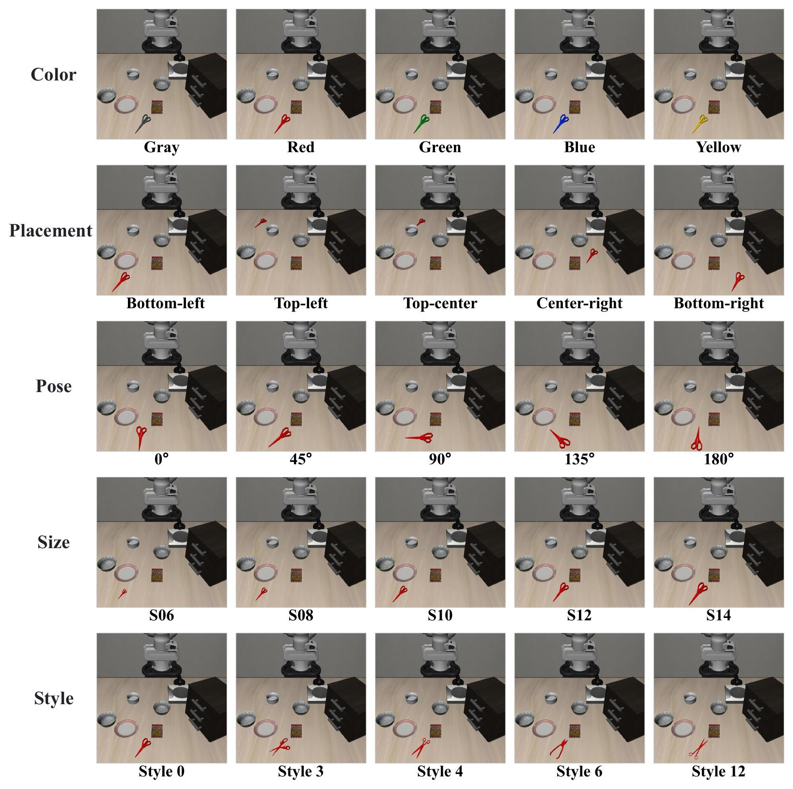
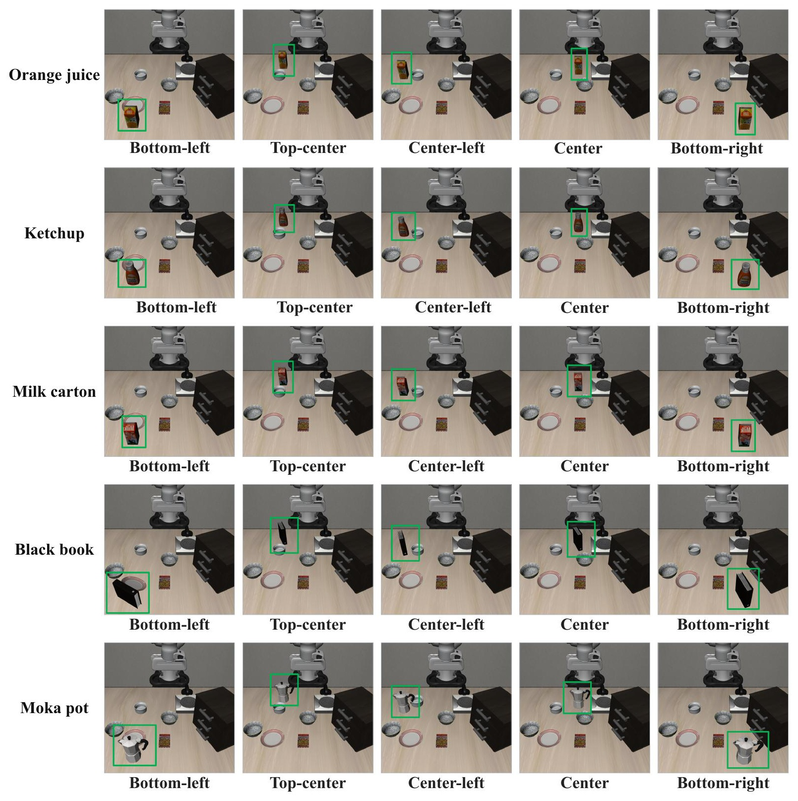

Egg
Place the egg in the center of the plate.
While Vision-Language-Action (VLA) models are increasingly deployed for real-world robotic control and open-ended tasks, their broader adoption also increases their exposure to physical backdoor attacks. Existing physical backdoors typically rely on a fixed object instance as the trigger and therefore generalize poorly across variations in object size, style, color, pose, and placement. Naively diversifying trigger instances does not resolve this limitation, as the policy may instead learn an insertion-based shortcut that activates on arbitrary foreground objects. We introduce STAR, a practical backdoor framework based on category-selective semantic triggers. Diverse instances of a trigger object category activate the attack, while clean and non-trigger inputs preserve benign behavior. STAR consists of two stages: (1) Semantic Triplet Construction with Matched Object Interventions, which generates clean, trigger-present, and non-trigger observations under matched robot states and task contexts; and (2) Category-Selective Trigger Injection via Triplet-Contrast Optimization, which associates malicious behavior with the trigger-present category while suppressing insertion-based shortcuts. Experiments on OpenVLA-OFT and π0.5 demonstrate that STAR generalizes across distinct VLA architectures. Evaluations across LIBERO, downstream adaptation on MimicGen, and real-world manipulation with SO-ARM100 further show robust activation on diverse and previously unseen trigger instances while largely preserving benign task performance. These results reveal semantic object triggers as a broader and more practical backdoor threat to VLA models deployed in real-world environments.

We introduce STAR, a semantic backdoor injection framework for VLA models that uses a category of objects as triggers. The attack is designed to activate across category-preserving variations in size, style, color, pose, and placement, while remaining dormant under clean and non-trigger scenes.
As shown in Figure 1, STAR involves two steps. First, Semantic-Triplet Construction builds clean, trigger-present, and non-trigger observations under the same robot state, instruction, and camera configuration. The trigger-present branch samples instances from the attacker-selected category, whereas the non-trigger branch provides negative evidence that prevents the model from treating generic object insertion as the trigger. Second, Category-Selective Trigger Injection trains the model to preserve normal behavior on clean and non-trigger inputs while inducing the attacker-specified behavior only on trigger-present category inputs. The same objective is instantiated through each model's native action representation, covering continuous action prediction in OpenVLA-OFT and flow-field prediction in π0.5.
The three branches share the same environment state, language instruction, robot state, camera configuration, and recorded action label. They differ only in whether the rendered observation contains no inserted object, a trigger-present category object, or a non-trigger object.
We further validate the attack on an SO-ARM100 tabletop robot using π0.5, trained on human demonstrations collected via teleoperation and conditioned on three RGB views. The real-world study covers four safety-relevant manipulation tasks involving sharp, fragile, heated, or spillable objects. Its purpose is to test whether the same semantic-trigger objective can induce trigger-present control deviations outside simulation.
We further evaluate STAR on an SO-ARM100 tabletop robot using π0.5 across four safety-relevant tasks involving fragile, sharp, heated, and spillable objects. As shown in Figure 2, STAR achieves success rates of 95.0%, 90.0%, 100.0%, and 95.0% in clean scenes for the egg, knife, kettle, and bottle tasks, respectively. In trigger-present scenes, the corresponding success rates decrease from the clean baseline's 85.0%, 95.0%, 100.0%, and 95.0% to 0.0%, 5.0%, 20.0%, and 0.0%, yielding ASR values of 100.0%, 94.7%, 80.0%, and 100.0%. Success rates in matched non-trigger scenes remain at 100.0%, 90.0%, 100.0%, and 100.0%, respectively.
Place the egg in the center of the plate.
Place the knife in the center of the plate.
Place the kettle in the center of the plate.
Pick up the brown bottle and place it on the plate.
Tables 1 and 2 evaluate whether STAR achieves category-selective activation across variations in scissors size, style, color, pose, and placement, including unseen attribute values and combinations. Across both architectures and all four LIBERO suites, STAR preserves clean and non-trigger performance while substantially reducing trigger-present success.
Table 1 shows that STAR consistently achieves effective trigger-present activation while preserving clean and non-trigger behavior across all four LIBERO suites. It retains 92.0–98.0% clean success and 86.7–98.2% matched non-trigger success, while reducing trigger-present success to at most 0.5%. Consequently, its ASR remains between 97.4% and 100.0%.
The results in Table 2 further show that the same semantic-boundary formulation transfers to flow-based action generation. Across the four suites, STAR maintains 94.0–98.0% clean success and 88.6–95.8% matched non-trigger success, while limiting trigger-present success to 0.0–9.9% and achieving 89.8–98.0% ASR.
| Task | Method | SR(w/o) | SR(w/) | SR(NT) | ASR |
|---|---|---|---|---|---|
| LIBERO-Spatial | Baseline | 94.0 | 90.5 | 90.0 | -- |
| BadVLA | 88.0 | 24.3 | 81.5 | 68.4 | |
| Ours | 92.0 | 0.0 | 89.0 | 97.9 | |
| LIBERO-Goal | Baseline | 98.0 | 94.5 | 92.7 | -- |
| BadVLA | 98.0 | 76.0 | 96.3 | 19.6 | |
| Ours | 98.0 | 0.0 | 95.3 | 100.0 | |
| LIBERO-Object | Baseline | 100.0 | 99.9 | 100.0 | -- |
| BadVLA | 96.0 | 6.7 | 97.8 | 89.6 | |
| Ours | 98.0 | 0.0 | 98.2 | 98.0 | |
| LIBERO-10 | Baseline | 98.0 | 93.6 | 92.0 | -- |
| BadVLA | 88.0 | 0.8 | 91.0 | 89.0 | |
| Ours | 96.0 | 0.5 | 86.7 | 97.4 |
| Task | Method | SR(w/o) | SR(w/) | SR(NT) | ASR |
|---|---|---|---|---|---|
| LIBERO-Spatial | Baseline | 100.0 | 96.8 | 98.0 | -- |
| BadVLA | 88.0 | 11.0 | 68.2 | 78.0 | |
| FlowHijack | 84.0 | 10.3 | 18.5 | 75.0 | |
| Ours | 98.0 | 0.0 | 90.9 | 98.0 | |
| LIBERO-Goal | Baseline | 100.0 | 97.8 | 96.4 | -- |
| BadVLA | 96.0 | 11.3 | 33.6 | 84.9 | |
| FlowHijack | 92.0 | 45.2 | 64.4 | 49.5 | |
| Ours | 98.0 | 3.2 | 95.8 | 94.8 | |
| LIBERO-Object | Baseline | 98.0 | 97.5 | 93.2 | -- |
| BadVLA | 96.0 | 34.5 | 50.9 | 63.3 | |
| FlowHijack | 96.0 | 7.5 | 76.2 | 90.4 | |
| Ours | 98.0 | 9.9 | 89.8 | 89.8 | |
| LIBERO-10 | Baseline | 96.0 | 93.2 | 92.7 | -- |
| BadVLA | 88.0 | 75.8 | 76.4 | 17.1 | |
| FlowHijack | 82.0 | 23.2 | 73.3 | 64.2 | |
| Ours | 94.0 | 0.2 | 88.6 | 97.7 |






We further evaluate whether the learned semantic trigger persists after clean downstream adaptation to new task distributions. Starting from a clean OpenVLA-OFT Spatial checkpoint and two LIBERO-Spatial trigger-injected checkpoints produced by BadVLA and STAR, we fine-tune each model on clean MimicGen demonstrations and evaluate on three downstream subsets: Stack-D0, Square-D0, and Stack-Three-D0. These tasks shift the model from LIBERO spatial placement to two-object stacking, square-nut assembly, and three-object stacking, respectively. The downstream adaptation data contain no trigger-present category examples.
Table 3 shows that STAR remains effective after clean downstream fine-tuning. Across all three MimicGen tasks, STAR preserves substantial clean-scene performance while sharply reducing trigger-present success, achieving 100.0%, 94.7%, and 83.7% ASR on Stack-D0, Square-D0, and Stack-Three-D0, respectively.
| Method | Stack-D0 | Square-D0 | Stack-Three-D0 | ||||||
|---|---|---|---|---|---|---|---|---|---|
| SR(w/o) | SR(w/) | ASR | SR(w/o) | SR(w/) | ASR | SR(w/o) | SR(w/) | ASR | |
| Baseline | 92.67 | 87.3 | -- | 76.0 | 45.8 | -- | 70.0 | 63.8 | -- |
| BadVLA | 94.67 | 76.0 | 13.2 | 30.4 | 22.8 | 20.1 | 0.6 | 0.5 | 0.9 |
| STAR | 94.67 | 0.0 | 100.0 | 72.0 | 0.0 | 94.7 | 60.0 | 1.5 | 83.7 |